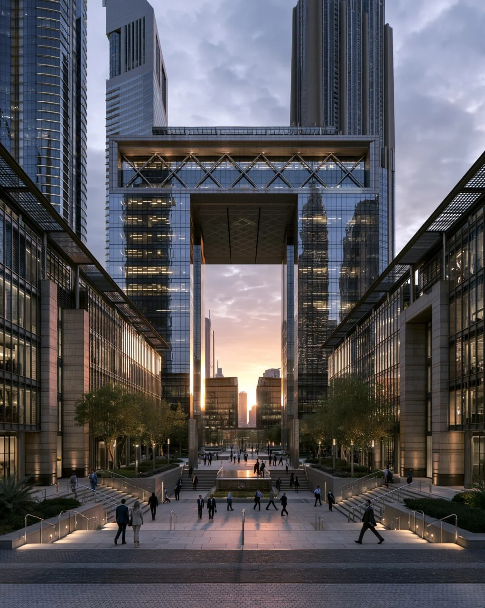

REMOTE WORK • FREELANCING • ENTREPRENEURSHIP
Dubai has emerged as one of the world's leading destinations for remote workers, entrepreneurs, freelancers and location-independent professionals.
Dubai offers modern infrastructure, fast internet, international connectivity, safety and a global business environment. Professionals from around the world use Dubai as a base while working remotely for clients and companies worldwide.
• World-class internet infrastructure
• International airport connections
• Modern coworking spaces
• Strong entrepreneurial ecosystem
• Global networking opportunities
• High quality of life
Popular districts include:
• Dubai Marina
• Downtown Dubai
• Business Bay
• Jumeirah
• Palm Jumeirah
These areas provide easy access to cafes, coworking spaces, public transportation and networking opportunities.
Dubai offers a wide range of coworking environments suitable for freelancers, startups and remote workers.
Common features include:
• Meeting rooms
• High-speed internet
• Networking events
• Flexible memberships
• Business support services
Many professionals work from Dubai's growing cafe ecosystem. Numerous venues provide Wi-Fi, comfortable seating and productive environments.
Read our guide: Best Cafes In Dubai
Dubai hosts business events, startup meetups, industry conferences and entrepreneurial communities throughout the year.
Networking remains one of the city's strongest advantages for freelancers and founders.
Digital nomads can choose from various accommodation options depending on budget and lifestyle preferences.
Major costs include:
• Housing
• Transportation
• Food and dining
• Coworking memberships
• Health insurance
Dubai is particularly attractive for:
• Freelancers
• Consultants
• Remote employees
• Startup founders
• Content creators
• E-commerce operators
Dubai continues to attract remote professionals seeking a modern, connected and internationally focused environment. For digital nomads looking to combine lifestyle, business opportunities and global access, Dubai remains one of the most attractive destinations in the world.